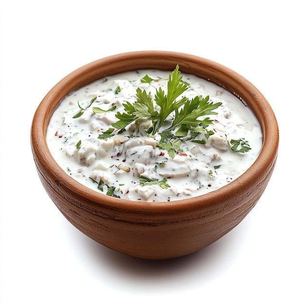

Raita

Description
Traditional Indian side dish with many different variations on ingredients
The recipe below is a basic guide to a 'base', and can be modified according to taste.
This 'side' can be made ahead of time and chilled.
Ingredients (4 portions)
- 500g of whole yoghurt
- 1/2 cucumber (deseeded)
- 2 salad tomatoes (deseeded)
- A pinch of salt and pepper
- Corriander to garnish
Steps
- Finely cube the cucumber and tomatoes.
- Mix in a bowl with the yoghurt.
- Just before serving, season to taste, add the corriander.